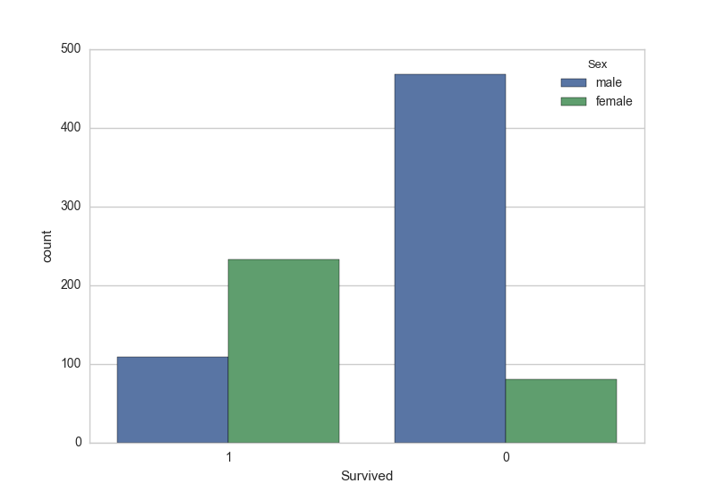
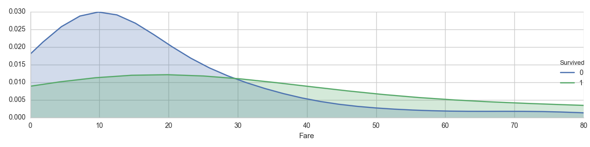

Titanic survivals
Titanic survivals is a project of predicting survivals of Titanic sinking tragedy. The details of the project is on kaggle. There are training and testing data set for this project. The data are available on kaggle. The problem of this project is a classification problem. With the information of passengers and whether they survived in training data set, the survival model is built. Then the model is applied to the passengers in testing data set to predict whether they survived or not.
Data set
The training and testing data set are availble on kaggle. Data set is read by [Pandas] as following:
import pandas as pd
train_df = pd.read_csv("./train.csv")Relation between information and survival
Before building model, it is needed to determine what information is related to survival. For example, does gender/price of ticket affect survival? Then unrelated information can be removed. More complex methods can be used to determine the relation.
This image shows the relation between gender and survival:

This images shows the effect of the price of ticket:

Data cleansing
Data cleansing prepare the data for machine learning. This process includes filling N/A, dropping useless columns and representing the string column with numbers. If the data are in Pandas data frame, it is easy to use Pandas do all of these.
- Filling N/A data
train_df["Embarked"] = train_df["Embarked"].fillna("S")- Dropping columns
train_df = train_df.drop(['PassengerId','Name','Ticket','Cabin'],axis=1)- Representing the string column with numbers
train_df["Sex"] = train_df["Sex"].map({'female':0, 'male':1}).astype(int)Building machine leaning model and predicting
Scikit-learning is used to build machine learning model and predict the survivals. Using of Scikit-learning is very easy as the following:
from sklearn.ensemble import RandomForestClassifier
forest = RandomForestClassifier(n_estimators=100)
forest.fit(xtrain,ytrain)
output = forest.predict(testdata).astype(int)This is an example of using Random Forest Tree. xtrain and ytrain can be pandas data frame and are from training data set. xtrain contains the information of passengers, and ytrain only has one column of survival information.
testdata has the same format as xtrain, but from testing data set. output is a python list with survival information (survived = 1, not_survived = 0).